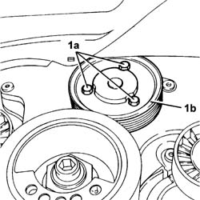

1088C24 Water pump PULLEY - R.R. with timing belt removed
- Path
- Procedures > 10 ENGINE > 1088 ENGINE COOLING > 1088C WATER PUMP AND THERMOSTAT > 1088C24 Water pump PULLEY - R.R. with timing belt removed
- Kind
- repair procedure (removal / refitting; the operation number is the code)
- Applies to
- engines: 2.0 TB, 2.4 20V, 3.0 V6, 3.2 V6; all production periods
- Interactive page
- https://sloeber94.github.io/elrnDB-lThss/en/#/190003
Applies to: engines: 3.0 V6, 3.2 V6; all production periods
 Removing
Removing
 Refitting
Refitting1. Undo the bolts (1a) and remove the water pump pulley (1b).

Applies to: engines: 3.0 V6, 3.2 V6; all production periods
Refitting
Removing- Fit the water pump pulley and secure it tightening the bolts to the recommended torque.
 | Value - daNm | Fastening | Component | Ø |
|---|---|---|---|---|
. | 0.9 | Bolt | WATER PUMP PULLEY | M6 |
Applies to: engines: 2.0 TB, 2.4 20V; all production periods
- Operation not available
Topics that link to this page (10)
- 1016D20 LEFT CYLINDER HEAD - R.R. and replace gasket
- 1020D12 Crankshaft oil seal FRONT COVER - R.R. and Replace seals
- 1020D18 Front crankshaft COVER OIL SEAL - Replace
- 1032B10 TOOTHED timing BELT - R.R. for timing adjustment or replacement
- 1032B55 LEFT HEAD TOOTHED DRIVEN PULLIES - R.R. FOR VERSIONS WITH AIR CONDITIONING
- 1032C32 TIMING BELT FIXED TENSIONER - R.R.
- 1036E15 Right cylinder head CAMSHAFTS - R.R. on vehicle for versions with air conditioning
- 1036E54 OIL SEALS FOR LEFT CYLINDER HEAD CAMSHAFTS - REPLACE
- 1036E58 OIL SEALS FOR RIGHT CYLINDER HEAD CAMSHAFTS - REPLACE
- 1088C10 WATER PUMP - R.R.